Next: misc contents Up: Numerical results for EAST Previous: Local magnetic shear
Next, consider the calculation of matrix elements  . In cylindrical
coordinates, we have
. In cylindrical
coordinates, we have
| 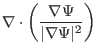 | 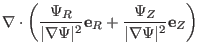 | ||
| 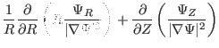 | |||
| 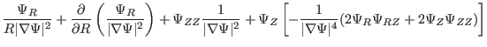 | |||
| 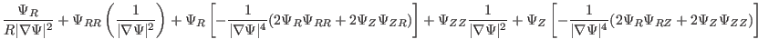 | |||
| 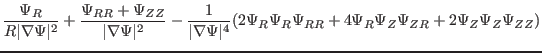 | (300) |
 can also be calculated in the magnetic surface coordinates.
can also be calculated in the magnetic surface coordinates.
| 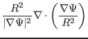 | 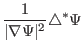 | ||
| 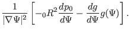 | (304) |
| 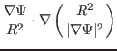 | 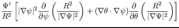 | (305) |
| 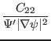 | 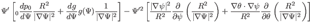 | (306) |
yj 2015-09-04